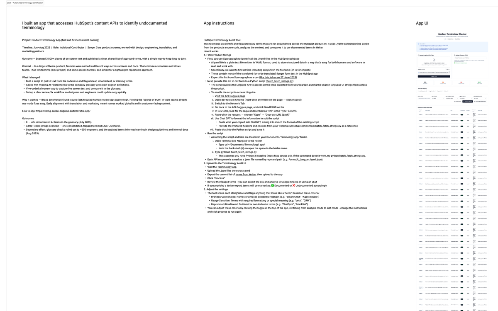

The problem
The terminology database wasn't growing fast enough.
In early 2024, HubSpot's terminology database in Writer was limited in breadth. Director-level feedback flagged that the gaps were causing visible design debt — teams were shipping inconsistent terms because there was no clear process for documenting new ones.
The challenge wasn't motivation. Teams wanted better terminology. The challenge was that documenting terms required a content designer to be present, which didn't scale. There were too many teams, too many product lines, and not enough content designers to cover them all.
Discovery
Understanding why documentation wasn't happening.
Before designing a solution, I ran discovery interviews with 8 people across 6 product lines to understand the real barriers — not just the stated ones. The findings shaped the workshop design directly:
- Teams didn't know what terms needed documenting until they were pointed at specific examples
- The existing documentation process felt heavyweight and unclear
- Without a dedicated session and a structured prompt, terminology review kept getting deprioritised
The answer wasn't more guidelines — it was a structured, time-boxed process that teams could run themselves.
The workshop model
A self-serve workshop teams could run without a content designer in the room.
I designed a 60-minute terminology workshop with a toolkit — facilitation guide, templates, and a process for submitting terms to Writer. The goal was that a PM or designer could run it independently.
I piloted it with 3 teams in 2024, resulting in 22 new terms identified and ready for Writer. In 2025, three further pilots each yielded 27 terms per session.
I presented this work at UX Design Review, showing the customer impact of inconsistent terminology and making the case for a repeatable, product-line-level fix with clear governance. I secured Director+ buy-in for a 2025 rollout, incorporating the toolkit into teams' quarterly operating systems.

The automated side of the work — a Python script using the Linguine API to extract product strings, feeding the Terminology Checker for analysis.
Code Orange
Pivoting to direct analysis at scale.
During Code Orange in 2025, I paused workshop development and moved to direct terminology analysis. Using the Terminology Checker, I generated reports for product groups, identified DRIs, and sent targeted communications to create a scalable improvement system.
I also built a dedicated Terminology Report reviewer to help teams filter and prioritise recommendations quickly.
Across Automation, Data Hub, and Reporting:
- 22 reports sent to DRIs
- 1,673 terms identified as being used incorrectly
- 3,638 instances of terms that may need to be documented
Teams were actively working on changes at the time of writing.
Outcomes
A repeatable process and a foundation for tooling.
The workshop model proved that teams could identify and document terms when given the right structure and a time-bounded format. The Code Orange sprint demonstrated that the same principles — targeted analysis, clear DRI ownership, structured reporting — could work at scale.
This work directly informed the design of the Terminology Checker. The governance model built here is what makes tooling useful: without a clear process for acting on findings, automated detection just produces reports nobody reads.